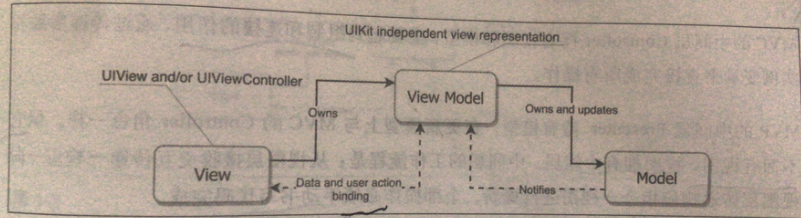
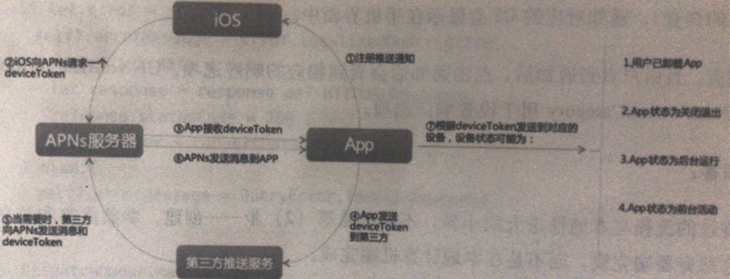

一些面试题的整合
题1： #include和#import 有什么区别？#import <> 和#import “” 有什么区别，@class？
1.1：
#import <> 对系统自带库或者第三方静态库头文件【编译为<>的形式】的应引用，编译器会在系统文件目录下查找这个文件；其实系统库也可以使用””，而使用<>比较省时。
#import “” 首先在用户目录下查找，然后到安装目录中查找，最后到系统文件目录总查找。
1.2：
#include 是对文件简单的拷贝到当前文件中，可能重复引用以及嵌套引用【交叉编译（你中有我，我中有你）】，oc中没有这种方式引入头文件了。统一使用#import，C中#include需要用到头文件保护，参考https://www.2cto.com/kf/201212/176881.html http://www.cnblogs.com/clover-toeic/p/3851102.html
#import 是#include的曾庆版本，防止同一个文件被多次包含【不会交叉编译】。
会包含这个类的所有信息，包含实体变量和方法。
1.3： #import与@class区别
1.3.1
#import会将此类的所有文件全部导入，包括实例变量和方法。
@class只是告诉编译器有这么一个类，引用类名，至于这些类是如何定义实现的不去考虑，一般用在.h文件的@interface之前。
1.3.2: 在头文件中，
@class一般用于头文件中需要声明该类的某个实例变量的时候，此时只需要@class类名即可，不需要知道其内部的实体变量和方法。
而在.m文件里面，如果会用到这个引用类的内部的实例变量和方法，就需要使用#import来包含这个被引用类的头文件，这时候才包含了这个被引用的类的所有信息。
1.3.3: 为什么不直接在头文件中直接#import呢?
如果有一个头文件a.h，在其他大量头文件中都需要引用头文件a.h，如果使用的是#import，那么当a.h中有了一点改动时，其他包含a.h的头文件都需要重新编译，这将耗费大量的时间，降低了开发效率。
而如果在需要的时候使用的是@class，当a.h中有了一点改动时，由于其他头文件并没有将a.h的内容包含进来，就不用重新编译，提高了开发效率。
1.3.4: 还有一个用法会引起编译错误的就是在a.h中#import ‘’b.h‘’ 在b.h中#import ‘’a.h‘’那么在编译的时候也会出现错误。
4.什么时候该用@class，什么时候需要用#import呢？
（1）一般如果有继承关系的用#import，如Ｂ是Ａ的子类那么在Ｂ中声明Ａ时用#import。
（2）如果有循环依赖关系，如:A–>B, B–>A这样的相互依赖关系，如果使用#import来相互包含，那么就会出现编译错误，如果使用@class在两个类的头文件中相互声明，则不会有编译错误出现. @class指令只是告诉编译器，这是个类，保留个空间来存放指针就可以了。
（3）还有就是自定义代理的时候，如果在头文件中想声明遵循代理，遵循协议的时候应该用#import导入文件，不然的话会出错误。（delegate还不太清楚，正在学习和实践）
（4）使用有Category的类，要在.h头文件里用#import把Category包含进来。
>>PS:
1.能使用#import的地方就不要使用#inlclude
2.使用#import不管你对一个文件同时包含了多少次，最终只会包含一次
3.在头文件中如果没有用到包含类的实现方法，只需要知道它是一个类时，@就应该使用@class，而不是#import。如果需要使用类的一些方法时，则需要使用#import。
4.能使用@class的地方就不要使用#import
有关参考可以查看文章： c语言的预处理 参考链接：https://helinyu.github.io/2019/02/16/C-%E9%A2%84%E5%A4%84%E7%90%86/
题1扩展：多用类型变量，少用#define预处理命令
1）不要用预处理指令定义常量，这样定义出来的常量不含类型信息，编译器只是会在编译钱据此执行查找预知替换操作。 【原因】及时有人重新定义了常量值，编译器也不会产生警告信息，这将导致应用程序中常量值不一致。
2）在实现文件中是先用static const来定义“值在编译单元内可见的变量”。由于此类常量不在全局符号表中，所以无需为其名称家前缀。 这种方式比宏定义多了一个类型信息。
3）在头文件中使用extern来声明常量，并在相关实现文件中定义其值。这种常量要出现在全局符号表中，所以，其名称英加以区隔，通常用与之相关的类名做前缀。
详细了解：
题2：ios中frame和bounds有什么区别？
https://www.jianshu.com/p/964313cfbdaa
题3：（iOS）设计模式是什么？你知道哪些设计模式？并且简要阐述
工厂模式、单例模式、代理模式、享元模式、责任链模式、观察者模式
题4：MVC和MVVM的区别？以及mvp
【开发者遇到瓶颈：需要去查看设计模式，架构】相当于建筑的脚手架
1）代码均摊，代码维护以及管理，更加的有层次感
2）便于测试， 测试确保代码质量， eg：单元测试、性能测试、UI测试
App架构的合理分配决定了各个测试能够使各个测试能够各司其职，不重复、不遗漏，让测试效率和覆盖率到最大。
3）具有易用性， 确保后来的各种需求，同时新人加入更加容易学习。
目前流行的架构有：mvc ,mvp, mvcs, mvvm, viper
1.MVC
苹果官方的MVC架构的优点和缺点：
优点：
1） 代码总量少
2）简单易懂
缺点：
1）代码过于集中
2）难以进行测试
3）难以扩展
4）Model层国语简单
5）网络请求逻辑无从安放
总之： mvc的代码过于笼统； 对于任何一个类或者结构体，只要不是数据和视图，就被放在控制器一层。ViewController耦合了视图和控制器，天生缺点。
2、MVCS
针对MVC进行的优化，S（store）存储， 这部分单独从Model或者ViewController中拆分出来构成单独的文件。
MVC缺点是网络层无处安放，其实mvcs可以把网络层放在S层中，网络请求也是为了获得数据，而且一般API请求之后，数据进行缓存和持久化处理，所以存放在数据层比较合理。
PS : 更加细致，更加容易测试
3、MVVM
主要是VM（ViewModel）
扮演的角色：
1）视图层的真正数据提供者；
一般视图层展示的数据经常是一个或是多个模型的属性组合。
eg： 可能一个视频要展示很多不同数据结构的数据，这个时候就需要ViewModel进行对数据的整合。
2）视图层的交互响应者。所有用户的交互都会传递给ViewModel，ViewModel会依次更新视图需要的属性，同时相应修改模型层的数据。这里依靠的是属性观察者或相应架构。

记住： VM：View拥有V；然后数据绑定，View的交互响应者
VM：拥有和更新M，M数据更新需要通知VM， 然后VM更新View。
MVVM和MVC最大的区别是：数据双向的绑定。
MVC、MVVM、MVVP的缺点是：没有涉及到路由的设计。
还有其他的设计模式。。。。。。
题5：Objective-C的类可以多重继承么？可以实现多个接口么？category是什么？重写一个类的方式是继承还是分类好？为什么？
1）OC不支持多重继承 ； 由于消息机制名字查找发生在运行时而非编译时，很难解决多个基类可能导致的二义性问题。
【当单继承不够用，很难为问题域建模时，我们通常都会直接想到多继承。多继承是从多个直接基类派生类的能力，可以更加直接地为应用程序建模。】
iOS实现“多继承”的方式（简介实现多继承目的）： https://www.jianshu.com/p/c473b41c083d
消息转发机制， 实现多借口，
2）可以实现多个接口，，
3）Category是oc的一种类的扩展机制； 主要是为已存在的类添加方法。
4）单纯添加方法： 使用分类 ， 如果有属性等，可以使用继承关系。
已经存在的类，可以使用功能分类来进行处理，不改变原来的类。
扩展：（匿名分类）可以定义属性 ，
category： 不可以定义属性，只是可以声明属性。
题6：HTTP中GET与POST 的区别
key： 方向，类型，参数位置
GET： 【方向】从服务器获取信息；【类型】处理静态和动态的内容；【参数位置】GET的参数在其URI中； 被缓存，可以被存储在浏览器的历史中，器内容从理论上有长度限制
POST: 【方向】向服务器发送消息，【类型】只是处理动态内容，【参数位置】POST参数在其包体里，参数角度看，POST比GET更加安全，隐秘； POST 在这三个方面恰恰相反。
扩展到： https ，tcp，以及dup的内容
题7：常见的OC的数据类型有哪些？和C的基本数据类型有什么区别？eg：NSInteger和Int
题8：objective-C如何对内容进行管理的，说说你的看法和解决
『扩展』：开发中如何检查内存泄露的？
题9：OC创建线程的方法是什么？如果在主线程中执行代码，方法是什么？如果想延时执行代码、方法是什么？
题10：ViewController的生命周期
题11：Delegate和notification有什么区别？
题12：什么是block
Block是C语言的扩充，即带有自动变量的匿名函数，它和普通变量一样，可以作为自动变量，函数参数，静态变量，全局变量。
block 本质应该是一个函数指针加上一个对应捕获上下文变量的内存块（结构体或者类），之前用宏语法糖封装了一个GCD用在Windows开发上
参考链接：
https://www.jianshu.com/p/cf61bfad211a
题13：iOS中常用的数据存储方式
题14：ios中沙盒的目录结构是怎么样的？
4、AppName.app 目录：这是应用程序的程序包目录，包含应用程序的本身。由于应用程序必须经过签名，所以您在运行时不能对这个目录中的内容进行修改，否则可能会使应用程序无法启动。
1、Documents 目录：您应该将所有的应用程序数据文件写入到这个目录下。这个目录用于存储用户数据。该路径可通过配置实现iTunes共享文件。可被iTunes备份。
2、Library 目录：这个目录下有两个子目录：
Preferences 目录：包含应用程序的偏好设置文件。您不应该直接创建偏好设置文件，而是应该使用NSUserDefaults类来取得和设置应用程序的偏好.
Caches 目录：用于存放应用程序专用的支持文件，保存应用程序再次启动过程中需要的信息。
可创建子文件夹。可以用来放置您希望被备份但不希望被用户看到的数据。该路径下的文件夹，除Caches以外，都会被iTunes备份。
3、tmp 目录：这个目录用于存放临时文件，保存应用程序再次启动过程中不需要的信息。该路径下的文件不会被iTunes备份。
题15：iOS多线程技术有哪几种方式？
GCD和NSOperation的区别
题16：什么是TCP/UDP ：TCP (Transmission Control Protocol)， UDP(User Datagram Protocol)
1）TCP和UDP协议属于传输层协议。
2）TCP提供IP环境下的数据可靠传输，它提供的服务包括数据流传送、可靠性、有效流控、全双工操作和多路复用。 通过面向连接、端到端和可靠的数据包发送。通俗说，它是事先为所发送的数据开辟出连接好的通道，然后再进行数据发送； | 可靠、有效流控、全双工、多路复用、【通过面向链接】
2）UDP则不为IP提供可靠性、流控或差错恢复功能。 | 不可靠、块数据、没有差错恢复
3）一般来说，TCP对应的是可靠性要求高的应用，而UDP对应的则是可靠性要求低、传输经济的应用。TCP支持的应用协议主要有：Telnet、FTP、SMTP等；UDP支持的应用层协议主要有：NFS（网络文件系统）、SNMP（简单网络管理协议）、DNS（主域名称系统）、TFTP（通用文件传输协议）等。
题17：介绍一下XMPP
XMPP （Extensible Messaging and Presense Protocol 前称：Jabber）协议： 可拓展消息处理现场协议是基于可拓展标记语言（XML）胡近端串流式即时通讯协议。它将现场肯上下文敏感信息标记嵌入到XML结构化数据中，使得人与人之间、应用系统之间以及人与应用系统之间能即时通讯。XMPP是基于XML架构的开放式协议。
PS:感觉消耗数据比较大。
题18：使用伪代码写一个线程安全的单例
static AccountManager sharedAccountManagerInstance = nil;
+ (AccountManager )sharedManager {
static dispatch_once_t predicate; dispatch_once(&predicate, ^{
sharedAccountManagerInstance = [[AccountManager alloc] init];
});
return sharedAccountManagerInstance;
}
题19：请简单介绍一下APNS发送系统消息机制

key: 厘清iOS系统、App、APNS（apple push notification service）服务器以及app对应的客户端关系。
1）App想iOS系统申请远程消息推送权限，这个与本地消息推送的注册通知是一样的。
2）iOS系统向APNS服务器请求手机端的DeviceToken并且告诉App，允许接受推送的通知。
3）App接收到deviceToken
4）App将受到的DeviceToken传给app对应的服务器端。
|| 下面是推送的过程
5）远程消息由app对应的服务器端产生，它会先经过APNs服务器
6）Apns 服务器将远程通知推送到响应的手机
7）根据对应的deviceToken，通知会推送到指定的手机。
1 | // iOS8 下需要使用新的 API |